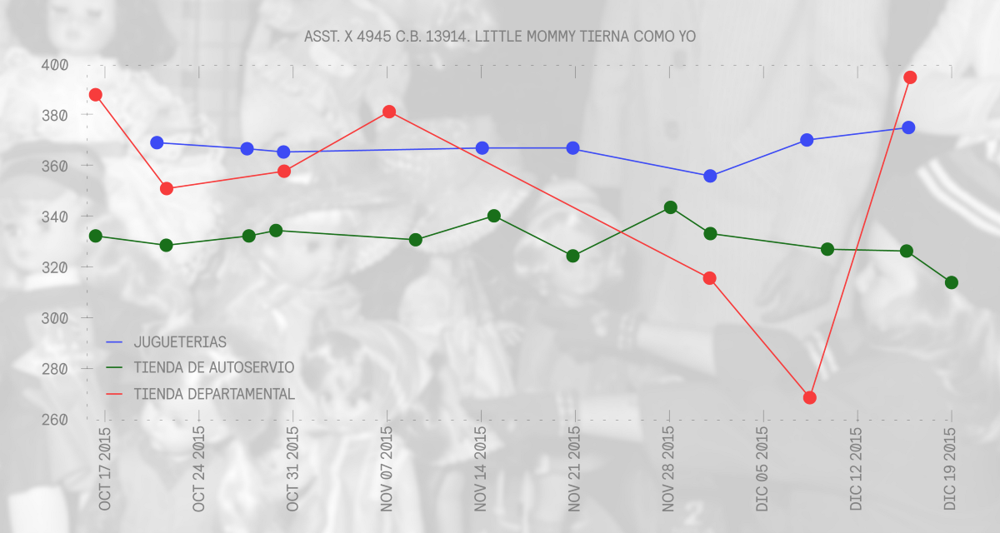

Tres consejos para comprar juguetes esta Navidad y no endeudarte en el intento
Una investigación del Laboratorio de Datos de FOROtv y OPI, Inteligencia Participativa
La época navideña está a la vuelta de la esquina y las familias mexicanas se preparan para enfrentar gastos muy importantes. El costo de las fiestas llega a impactar a las familias incluso en el siguiente año, en la llamada cuesta de enero. Por supuesto, uno de los principales gastos durante estas fechas son los juguetes de los niños.
En el Laboratorio de datos FOROtv y OPI: Inteligencia Participativa nos dimos a la tarea de elaborar un análisis de los precios de los juguetes en México. Así, esperamos poder ayudarte para decidir el mejor momento y el mejor lugar para sacarle más jugo a tu cartera. Estas estrategias pueden serte muy útiles porque los precios fluctúan mucho en estas fechas de derroche económico.
Tras analizar y comparar un millón 600 mil registros te hacemos, a continuación, cuatro recomendaciones esenciales que te pueden llevar a ahorrar hasta el 35% en gastos de juguetes.
Antes de empezar…
Parece evidente, pero antes de realizar cualquier compra debes verificar la disponibilidad del producto. Nuestra base de datos analizó más de 1.6 millones de precios publicados por PROFECO en datos.gob.mx. y estos se dividieron en tres sectores: tiendas departamentales, tiendas de autoservicio y jugueterías. En todos los casos, los precios varían. Por eso es importante ubicar primero qué tiendas tienen el producto que buscas. A partir de ahí puedes comparar los mejores precios con los siguientes consejos.
1- Busca primero en tiendas de autoservicio
(Photo by Donald Miralle/Getty Images)Tras analizar y comparar nuestra base de datos encontramos que en un 90% de las ocasiones los juguetes son más caros en las jugueterías. Eso quiere decir que tus primeras opciones para buscar precios más bajos deben ser, generalmente las tiendas de autoservicio. Estas últimas llegan a tener precios 30% más bajos. Es por eso que te recomendamos iniciar tu búsqueda ahí.
Un buen ejemplo de este comportamiento es el que nos da la confrontación de precios de la pista de carreras Duelo de T-Rex que tuvo mucho éxito el año pasado. Comparando los precios de octubre a diciembre de 2015 podemos notar que en ningún momento el precio de la tienda de autoservicio supera al de las jugueterías.
[Evolución de los precios de Duelo de T-Rex en tiendas de autoservicio y jugueterías]2- Los precios varían con la fecha
(Photo by Keystone/Getty Images)Sin embargo, tomando el mismo ejemplo, podemos observar que los precios varían con la fecha. De esta manera, si piensas comprar en una tienda de autoservicio, te sugerimos esperar a la segunda semana de diciembre, o bien, te recomendamos que lo hagas durante la última quincena de octubre y la primera de noviembre, pues entre finales de noviembre y principios de diciembre los precios suben.
[Evolución de los precios de los juguetes en general en tiendas de autoservicio.]Por ejemplo, el clásico juego de mesa Uno Roboto baja hasta un 20% entre su máximo a mediados de noviembre y su mínimo antes de Navidad en tiendas de autoservicio.
[Evolución en el precio de Uno Roboto en tiendas de autoservicio]También se puede notar, con el ejemplo de la pista de carreras Duelo de T-Rex, que los precios de las tiendas de autoservicio bajan en los días cercanos a Navidad, mientras que los de las jugueterías aumentan.
[Evolución comparativa de los precios de la pista de carreras Duelo de T-Rex en tiendas de autoservicio y jugueterías.]Por su parte, las jugueterías presentan sus precios más bajos al finalizar la primera quincena de noviembre y, a partir de ahí, todo es cuesta arriba. Los días más cercanos a Navidad presentan un crecimiento aun más agudo.
[Evolución en los precios de las jugueterías]3- Hay que fijarse en las semanas de descuento
(Photo by Evening Standard/Getty Images)Existe también una tendencia importante: las tiendas departamentales tienen buenos periodos de descuento. Así, si quieres hacer todas tus compras en el mismo lugar o aprovechar los créditos a meses sin intereses que estas tiendas ofrecen, debes fijarte en qué ofrecen las mejores ofertas. Si observamos la gráfica de precios de la muñeca Little Mommy Tierna como Yo, podemos observar cómo, a principios de diciembre, los precios cayeron considerablemente en las tiendas departamentales (logrando incluso superar la oferta de las tiendas de autoservicio).
 [Evolución de los precios de la muñeca Little Mommy Tierna como Yo en tiendas de autoservicio, jugueterías y tiendas departamentales]Así, en el los últimos días de noviembre y el inicio de diciembre las tiendas departamentales tuvieron los mejores precios para este juguete:
 [Evolución de los precios de la muñeca Little Mommy Tierna como Yo en tiendas de autoservicio, jugueterías y tiendas departamentales]
[Evolución de los precios de la muñeca Little Mommy Tierna como Yo en tiendas de autoservicio, jugueterías y tiendas departamentales]
En conclusión:
Las tiendas de autoservicios casi siempre ofrecen mejores precios, las jugueterías son más caras y suben sus precios conforme se acerca la Navidad, y las departamentales tienen descuentos muy atractivos la primera semana de diciembre. Por eso tienes que tener en cuenta la disponibilidad en tiendas de autoservicio, los descuentos en las tiendas departamentales y alejarte, de ser posible, de las jugueterías conforme se acercan las fiestas navideñas. Si sigues estos consejos puedes encontrar los mejores precios y llegar a la cuesta de enero con más dinero en el bolsillo.
Las fuentes de información que usamos y consultamos para el análisis fueron:
Análisis de datos por Jerónimo Carvajal, Jorge Andrés Castañeda y Alejandro Maza Ayala. OPI